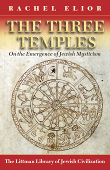

The Three Temples
On the Emergence of Jewish Mysticism in Late Antiquity
translated from Hebrew by David Louvish
Rachel
Elior demonstrates convincingly how the Jewish mystical tradition crystallized
in its early stages. She attributes its origins to priests prevented by
circumstance from serving in the Temple: replacing the earthly Temple
liturgically and ritually with a heavenly Merkavah and heavenly sanctuaries
known as Heikhalot, they created a mystical world in which ministering
angels replaced Temple priests, thereby giving Judaism a new spiritual
focus.
More info
In this ground-breaking study, Rachel Elior offers a comprehensive theory of the crystallization of the early stages of the mystical tradition in Judaism based on the numerous ancient scrolls and manuscripts published in the last few decades. Her wide-ranging research, scrupulously documented, enables her to demonstrate an uninterrupted line linking the priestly traditions of the Temple, the mystical liturgical literature found in the Qumran Caves and associated directly and indirectly with the Merkavah tradition of around the second and first centuries BCE, and the mystical works of the second to fifth centuries CE known as Heikhalot literature.
The key factor linking all these texts, according to Professor Elior's theory, is that many of those who wrote them were members of the priestly classes. Prevented from being able to perform the rituals of sacred service in the Temple as ordained in the biblical tradition, they channelled their religious impetus in other directions to create a new spiritual focus. The mystical tradition they developed centred first on a heavenly Chariot Throne known as the Merkavah, and later on heavenly sanctuaries known as Heikhalot. In this way the priestly class developed an alternative focus for spirituality, based on a supertemporal liturgical and ritual relationship with ministering angels in the supernal sanctuaries. This came to embrace an entire mystical world devoted to sustaining religious liturgical tradition and ritual memory in the absence of the Temple.
This lyrical investigation of the origins and workings of this supernal world is sure to become a standard work in the study of early Jewish mysticism.
'Rachel Elior's broad historical perspective on mysticism and the writers
of the Dead Sea Scrolls demands that the reader grapple anew with the essence
of Jewish tradition.'
Joseph Dan, Ha'aretz
About the author
Rachel Elior is John and Golda Cohen Professor of Jewish Philosophy and Jewish Mystical Thought at the Hebrew University of Jerusalem, and has been a research fellow and visiting professor at University College London, the University of Amsterdam, Oberlin College, the University of Michigan at Ann Arbor, the Oxford Centre for Hebrew and Jewish Studies, Case Western University, Yeshiva University, Tokyo University, and Princeton University. The recipients of many awards, she is the author of numerous works on Jewish mysticism and hasidism, including The Paradoxical Ascent to God: The Kabbalistic Theosophy of Habad Hasidism (1992), The Mystical Origins of Hasidism (2006), and Jewish Mysticism: The Infinite Expression of Freedom (forthcoming 2007).
Professor Elior was awarded the 2006 Gershom Scholem Prize for the Study of Kabbalah and Jewish Mysticism by the Israel Academy of Sciences and Humanities.
Contents
Note on Translations of Sources
Introduction
Appendix: 'Essenes' or 'the Priests, Sons of Zadok'
1 The Merkavah and the Sevenfold Pattern
2 From Temple to Merkavah: From the Chariot Throne of the Cherubim to Ezekiel's
Vision
3 The Solar Calendar as Pattern of Sacred Time
4 Enoch Son of Jared and the Solar Calendar
5 The Sin of the Watchers and the Lunar Calendar
6 Covenants, Oaths, Sevens, and Festival of Shavuot
7 Ezekiel¹s Vision and the Festival of Shavuot
8 Priests and Angels
9 The Secessionist Priesthood and Rabbinic Tradition
10 Heikhalot Literature
Glossary
Bibliography
Index
Reviews
'Very readable . . . This is only the second of Elior's many Hebrew works to be translated into English. Hopefully, it is the harbinger of many more. I recommend this work for inclusion in all academic and theological collections.'
Daniel J. Rettberg, AJL Newsletter
'In this major work, senior scholar Rachel Elior demonstrates her sure command over a broad swath of ancient esoteric texts, examining together sources usually treated in isolation . . . Elior has put forward a series of incisive . . . arguments that are sure to provoke discussion.'
G. Spinner, Choice
'This very worthwhile work deserves praise for its breathtaking scope, its bold courage, and its brilliant creativity.'
Andrea Lieber, Journal of Religion
'Rachel Elior's broad historical perspective on mysticism and the writers
of the Dead Sea Scrolls demands that the reader grapple anew with the essence
of Jewish tradition.'
Joseph Dan, Ha'aretz
'Elior succeeds in her attempt at answering the question constantly discussed in the scholarship on early Jewish mysticism, by and for whom the poetic descriptions of heavenly palaces were written . . . What makes her exposition exciting is its reversal of the existing view . . . Rachel Elior's sketch of a different picture of early Judaism, which is written with much verve, has opened up many new problems for research. Her book does not merely deal with the origin of Jewish mysticism, but with the foundations of Judaism and thereby, even in its method, breaks down disciplinary barriers.'
Gerold Necker, Judaica
'Innovative . . . This is an important book for anyone interested in the Qumran sectaries and in the origins of the Jewish mystical tradition. It is well written, lays out its arguments clearly, and can be highly recommended.'
Morris M. Faierstein, Religious Studies Review

312 pages
ISBN: 978-1-874774-66-2 hardback - out of print
978-1-904113-33-1 paperback
£17.95 / $32.95
Publication March 2004 - hardback out of print
June 2005 paperback